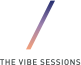

Welcome.
We’d like to personally welcome you to the Thync Immersion. This is an environment for learning and experimentation, designed for building coherence and clarity internally. We seek to learn the basic parameters of what makes a great guided Vibe experience for your target users segments. Our aim as a team is to discover, test, validate, and polish studio-quality Welcome Vibes and Premium Vibes that dramatically enhance the onboarding process and overall user experience.
During our time together, we will be focusing on two activities:
-
Improving the Welcome Vibes experience for Calm and Energy by 10x.
-
Developing and testing “moonshot” Premium Vibe tracks for two user segments: athletes and meditators.
The Essentials
What
24+ real and potential customers, the Thync team, sound designers and the Metapattern team coming together to learn the mindsets, tactics and strategies needed to build and run effective sprints.
We are guided by two open inquiries: How might we dramatically improve (10x) the Calm and Energy Welcome Vibes through thoughtful sound design and guided narration? How might we explore and tell the story of Premium Vibes and the Vibe Marketplace?
Two teams test against a set of distinct customer archetypes to prototype and measure the impact of different styles of guided Vibes per our framework. In total, 24 customers selected from the known customer segments will be tested during the Immersion as qualitative feedback. Vibes go ‘head-to-head’ until a clear set of characteristics emerge as preferred by each segment. At the end of day one, findings are synthesized and refined and tested again on day two, until we reach a polished product that are ready for market.
The third ‘moonshot’ team focuses on a Premium Vibes track to measure the appeal and impact of being guided by a celebrity voice. This team gathers insights and tests the idea of a content marketplace with existing Thync users to better understand the long-term potential.
When
July 23rd - 24th, 2015 Arrival time (both days): 8:30am Finish time (both days): ~5:30pm
Where
140 W Main St. Los Gatos, CA 95030 United States
Who
Δ / Team: Carson Linforth Bowley (principal); Mikyö Clark (principal); Ting Kelly (co-facilitator); Chad Owen (producer)
Preparation
How can I be most prepared for this?
- Try to get at least 8 hours of sleep the night before.
- Set up an email auto-responder so you can be fully present.
- Listen to this RadioLab podcast
- Download and try Headspace (a free meditation app)
What should I bring the day of?
- Yourself
- A pair of headphones
- A notepad
- Any special needs you may have
- Your curiosity and open mind
What should I expect?
Over the course of the two days, we will go through 4 complete prototyping cycles, from concept > prototype > test > iteration (maybe a diagram could be used here).
Each day will have a specific focus: - Day 1: Collective visioning and producing low-fidelity vibe prototypes based on real user feedback - Day 2: Producing and refining high-fidelity prototypes based on real user feedback
There will be 3 teams broken up into: Calm, Energy, Premium. The Premium team will focus and test with Meditators on Day 1, and Athletes on Day 2.
What are the desired outcomes?
Our goal is to come out of the Immersion with a Welcome Vibe for Calm and Energy that is improved 10x, and fortifies the potential of the Thync experience. We will be applying the process of rapid prototyping and real-time customer feedback. The immersion is designed to be practical and tactical so that you can get as close to the direct user experience and accelerates the feedback loops and “time to try”.
Contact Information
If you have have any questions or emergencies, please don’t hesitate to contact our producer, Chad Owen.
Chad Owen, Producer cell 512.589.6056 email [chad@metapattern.is] (mailto:chad@metapattern.is)
Resources
Required Listening
http://www.radiolab.org/story/9-volt-nirvana/
Required Reading
Please read the Headspace site and download Headspace app and to one guided meditation.